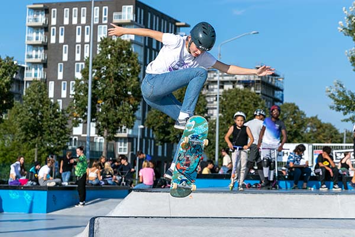
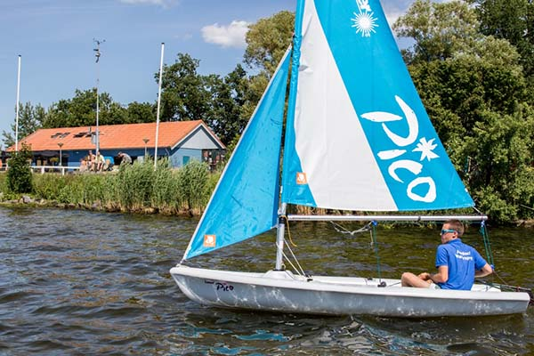

Stadslandgoed de Kemphaan, stranden, parken en mooie horeca die extra gasten graag verwelkomen. Hoe beter het daarmee gaat, hoe meer kwaliteit er ook bijkomt voor Almeerders. En dat het belangrijk is om fijne voorzieningen dichtbij te hebben bleek dit jaar des te meer!
HET KAN IN ALMERE
Almere is een ondernemende stad met alle ruimte om een bedrijf te starten en succesvol te laten groeien. De jongste stad van Nederland is in 45 jaar uitgegroeid tot zevende stad van Nederland met 215.000 inwoners, mooie bedrijven en instellingen en een talentvolle, goed opgeleide beroepsbevolking. Almere wil zo groen en duurzaam mogelijk doorgroeien tot vijfde stad van het land.
EVENEMENTEN
Almere heeft een aantrekkelijke, gevarieerde en onderscheidende evenementenkalender. Dat is belangrijk omdat het bezoekers naar de stad trekt, die hier geld uitgeven. Evenementen maken de stad aantrekkelijker voor eigen inwoners en biedt sponsoren bijzondere kansen. Helaas kon in 2020 slecht een klein aantal van de geplande evenementen doorgang vinden.

1/4VISIT ALMERE
Toerisme biedt veel kansen en draagt bij aan de levenskwaliteit van bewoners. Almere heeft een combinatie van bezienswaardige architectuur, watersport en prachtige natuur. Dat biedt Almere uitgelezen economische kansen zich te ontwikkelen tot een gewilde bestemming in een sector met nog veel potentie. We hebben een geweldig centrum, Nationaal Park De Oostvaardersplassen...

COALITIE-AKKOORD
Het coalitieakkoord en de marketing van Almere hebben één gemeenschappelijk doel: Almere sterker en beter maken. Het is belangrijk te blijven investeren in de zichtbaarheid van Almere, zeker nu door corona veel ondernemers en bedrijven in zwaar weer verkeren.
3/4CITYMARKETINGSTRATEGIE 2017-2023
De basis voor onze werkzaamheden is vastgelegd in het Citymarketingplan 2017-2023. Wij ontwikkelden het in 2017 met de gemeente en veertig stakeholders. De strategie geeft richting aan de manier waarop wonen, ondernemen, studeren en bezoeken onder de aandacht worden gebracht en is te downloaden via onderstaande button.
download pdf 4/4
 Char, Soundos el Ahmadi en Najib Amali. De film speelt zich onder andere af
in restaurant Nul36 op de Grote Markt en bevat mooie beelden van Almere. De
productie is ondersteund
door een samenwerking
met ons en Cultuurfonds
Almere, waardoor het ook een leertraject was voor
aankomende Almeerse
filmmakers.
Char, Soundos el Ahmadi en Najib Amali. De film speelt zich onder andere af
in restaurant Nul36 op de Grote Markt en bevat mooie beelden van Almere. De
productie is ondersteund
door een samenwerking
met ons en Cultuurfonds
Almere, waardoor het ook een leertraject was voor
aankomende Almeerse
filmmakers.
.jpeg)